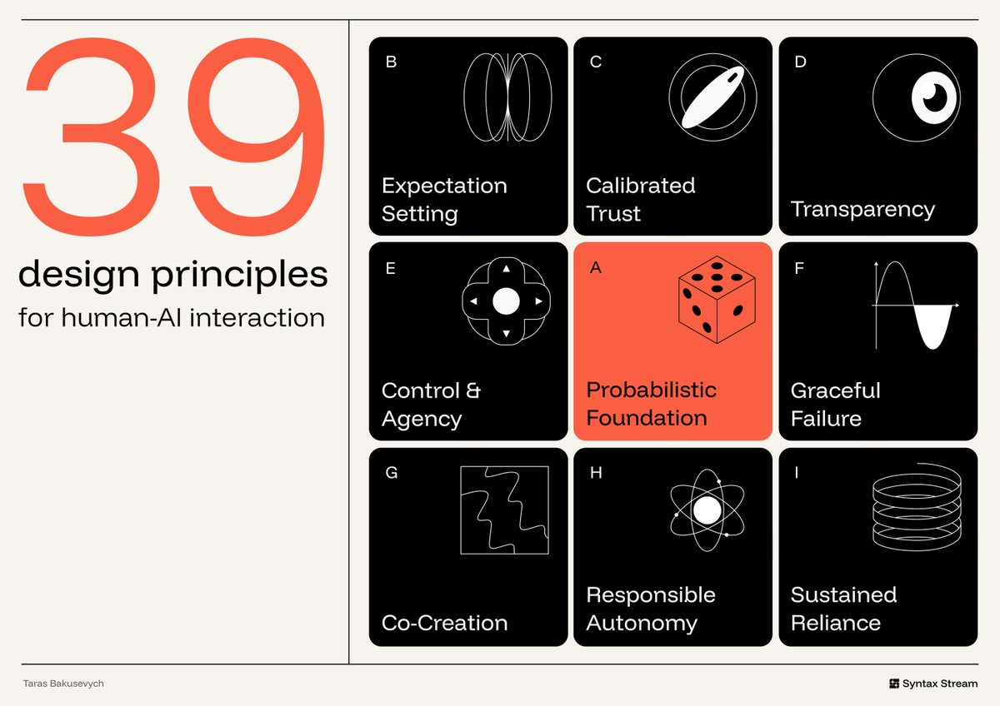

左边一个 39。右边九块，A 在正中发橙。点一块，下面列出这一簇的原则。
39
design principles
for human-AI interaction
奶油底。左栏巨大珊瑚色 39，右栏 3×3 黑方块。A Probabilistic Foundation 在正中、唯一一块橙。其余八块白线图标加簇名。A 放在几何中心，对应框架第一句：同一输入可以给出不同输出。
本页把海报做成目录。点一块打开该簇原则和原文例子。全文仍以 Syntax Stream 为准。

#stage#grid